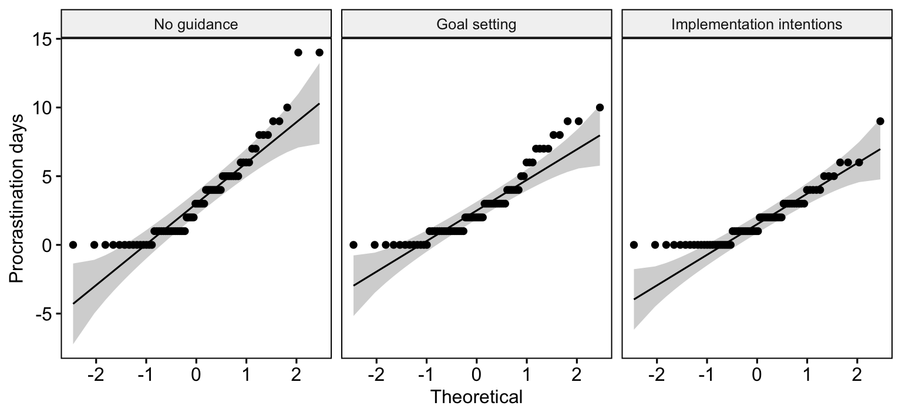
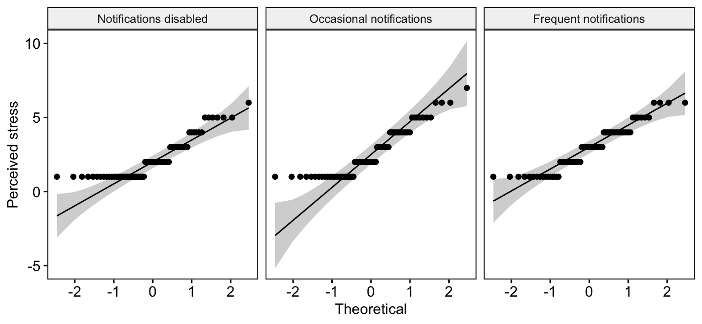

library(tidyverse) # Includes dplyr, tidyr, readr and ggplot2
library(rstatix) # Statistical tests, descriptive statistics and effect sizes
library(ggpubr) # Q-Q plots, as in previous practicals4. Non-Parametric ANOVA
Mark Hurlstone
Lectures
Watch Lecture 1 Part 1 here
Watch Lecture 1 Part 2 here
Download the Lecture 1 slides here, here for a larger version, and here for the live version.
Watch Lecture 2 Part 1 here
Watch Lecture 2 Part 2 here
Watch Lecture 2 Part 3 here
Download the Lecture 2 slides here, here for a larger version, and here for the live version.
This week, we will explore non-parametric alternatives to analysis of variance (ANOVA), focusing on the Kruskal–Wallis test for between-participants designs and the Friedman test for within-participants designs. We will examine when these tests are appropriate and how they use ranks rather than the original scores to investigate differences between experimental conditions. Through worked examples, we will learn how to calculate and interpret the test statistics, assess effect sizes, and conduct planned and post-hoc comparisons. Particular attention will be given to the differences between the two procedures, especially how observations are ranked in independent and related samples. Before attending the practical class, please review this week’s lecture materials and recordings above.
Practical
In Weeks 2 and 3, we used single-factor ANOVA to compare independent groups and repeated measurements. This week we will work with their rank-based alternatives: the Kruskal–Wallis test for independent groups and the Friedman test for repeated measurements. We will also practise planned comparisons, post-hoc tests and producing figures for reports.
This week’s lab
In this practical, we will use two hypothetical studies to extend the analyses you learned in Weeks 2 and 3. First, we will compare three independent groups of students who received different study-planning instructions. Next, we will analyse perceived stress ratings given by the same students under three smartphone-notification conditions.
By the end of the class you should be able to:
- Describe each experimental design and identify the appropriate rank-based omnibus test.
- Summarise data using medians and interquartile ranges, and inspect Q–Q plots and Shapiro–Wilk results.
- Conduct and interpret Kruskal–Wallis and Friedman tests, including their omnibus effect sizes.
- Distinguish planned comparisons from post-hoc tests and adjust for multiple comparisons.
- Prepare a clearly labelled figure and interpret an example results paragraph for each study.
Work through the code in your own R script, and try each activity before expanding Check your answer.
Getting started
To log in to the R server, first make sure that you have the VPN switched on, or you will need to be connected to the university network (Eduroam). To set up the VPN, follow ISS instructions here or connecting to Eduroam here.
When you are connected, navigate to https://ps-rstudio.lancaster.ac.uk/, where you will be shown a login screen that looks like the below. Click the option that says “Sign in with SAML”.

This will take you through to the University login screen, where you should enter your username (e.g. ivorym) and then your university password. This will then redirect you to the R server where you can start using RStudio!


Note
If you have already logged in through the university login, perhaps to get to the portal, then you may not see the username/password screen. When you click login, you will be redirected straight to RStudio. This is because the server shares the login information securely across the university.
Follow the same project setup procedure as in Weeks 2 and 3:
- In RStudio’s Files pane, open
psyc5141_labsand create a folder calledpsyc5141_lab_4. - Download the procrastination dataset and the smartphone-notifications dataset, then upload both CSV files to this folder.
- Choose File → New Project → Existing Directory, select
psyc5141_lab_4and click Create Project. - Create a new R script and save it as
week4_analysis.Rin your project.
Opening the project sets the working directory to this folder, so there is no need to call setwd(). As in previous weeks, enter the code in your R script and run it in order. Load the packages we have been using:
Part 1: Kruskal–Wallis test — study planning and procrastination
A researcher wants to investigate whether simple strategies for organising university coursework can reduce academic procrastination. Procrastination refers to putting off an intended task even though doing so may have negative consequences. A total of 216 university students are randomly allocated to one of three groups. At the beginning of a fortnight, each student receives the instructions appropriate to their allocated group:
| Condition | Instructions given to students |
|---|---|
| No guidance | Students are asked to complete their usual coursework over the next fortnight. They receive no additional advice on how to organise their study. |
| Goal setting | Students identify a specific study goal for the fortnight, such as completing a particular piece of coursework by a chosen date. They write down the goal, but receive no instructions about precisely when or how they will act on it. |
| Implementation intentions | Students identify a study goal and develop an if–then plan specifying when, where and how they will begin working towards it. For example: If it is 10 am on Monday and I have finished breakfast, then I will go to the library and work on my essay for 45 minutes. |
At the end of the fortnight, each student reports how many of the previous 14 days they procrastinated over coursework. A student who procrastinated on three days receives a score of 3; a student who did not procrastinate on any day receives 0. Thus, lower scores indicate less procrastination. This is a count of days, not a rating of how severely a student procrastinated.
The researcher predicts that implementation intentions will reduce procrastination relative to both no guidance and goal setting. These two predictions will form our planned comparisons. Because each student receives only one set of instructions, this is a between-participants design.
The dataset contains the following variables:
| Variable | Meaning |
|---|---|
Participant |
Unique identifier for each student. |
Condition |
Allocated study-planning condition, stored initially as text. |
ProcrastinationDays |
Number of days on which the student procrastinated during the 14-day period (0–14). |
Importing and preparing the data
First import the CSV into an object called planning_raw. Recall from Week 3 that we keep two versions of our data: an imported copy (planning_raw), which serves as an unchanged reference, and a working copy (planning_data), which we can modify during the analysis. If we make a mistake while preparing the working dataframe, we can start again from the raw copy. Neither object changes the original CSV file.
# Read the downloaded file from your RStudio project folder
planning_raw <- read_csv("week4_study_planning_between_revised.csv")# Create a working copy, preserving the original imported values
planning_data <- planning_rawSpecify the experimental conditions
As in Weeks 2 and 3, we need to tell R which variable identifies the experimental groups. When a CSV is imported, Condition is stored as a character variable (text). For statistical analyses and figures, we want R to recognise it as a factor with three named levels. We will also specify their order, so that tables and figures display conditions in a meaningful sequence rather than alphabetical order.
# Convert the group labels from character values into a factor
planning_data <- planning_data %>%
mutate(
Condition = factor(
# The existing character variable
Condition,
# Specify the order of the levels
levels = c("No guidance", "Goal setting", "Implementation intentions")
)
)Inspect the working dataframe
Use glimpse() to check the number of rows, the variable names and the data types. In particular, look for the <fct> label beside Condition, indicating that it is now a factor.
# Display the dataframe structure, including each variable's type
# and a preview of the values in each column
glimpse(planning_data)Rows: 216
Columns: 3
$ Participant <dbl> 1, 2, 3, 4, 5, 6, 7, 8, 9, 10, 11, 12, 13, 14, 15,…
$ Condition <fct> No guidance, No guidance, No guidance, No guidance…
$ ProcrastinationDays <dbl> 3, 1, 4, 6, 4, 5, 1, 0, 5, 4, 5, 1, 1, 3, 5, 2, 0,…Next, check how many students were allocated to each group. The count() function groups rows by the specified variable and counts them. The pipe passes planning_data to that function.
# Count the number of participants in each experimental condition
planning_data %>%
count(Condition)# A tibble: 3 × 2
Condition n
<fct> <int>
1 No guidance 72
2 Goal setting 72
3 Implementation intentions 72There should be 72 students in each condition. Each student contributes one score, so these are independent groups.
Descriptive statistics and normality
The outcome records the number of days, out of a possible 14, on which each student procrastinated. It therefore cannot be negative or greater than 14, and many students may have relatively low scores. We will summarise each group with its median (middle observed score) and interquartile range (the spread of the middle 50% of scores), and then inspect the distributions.
# Calculate a separate summary for each study-planning condition
planning_descriptives <- planning_data %>%
group_by(Condition) %>% # Split observations into the three groups
summarise(
# Number of students in each group
n = n(),
# Middle number of procrastination days
median = median(ProcrastinationDays),
# 25th percentile
Q1 = quantile(ProcrastinationDays, .25),
# 75th percentile
Q3 = quantile(ProcrastinationDays, .75),
# Difference between Q3 and Q1
IQR = IQR(ProcrastinationDays),
.groups = "drop"
)
planning_descriptives # Display the summary table# A tibble: 3 × 6
Condition n median Q1 Q3 IQR
<fct> <int> <dbl> <dbl> <dbl> <dbl>
1 No guidance 72 3 1 5 4
2 Goal setting 72 2 1 4 3
3 Implementation intentions 72 1 0 3 3Use a Q–Q plot to compare the sample quantiles with those expected under a normal distribution. Strong curvature and departures from the reference line indicate that the distribution is not well described by a normal model.
planning_data %>%
ggqqplot(x = "ProcrastinationDays", facet.by = "Condition",
ylab = "Procrastination days")
# Conduct a separate Shapiro–Wilk test for each condition
planning_data %>%
group_by(Condition) %>%
shapiro_test(ProcrastinationDays)# A tibble: 3 × 4
Condition variable statistic p
<fct> <chr> <dbl> <dbl>
1 No guidance ProcrastinationDays 0.867 0.00000183
2 Goal setting ProcrastinationDays 0.872 0.00000277
3 Implementation intentions ProcrastinationDays 0.857 0.000000834The Shapiro–Wilk null hypothesis is that observations come from a normal distribution. Small p-values indicate evidence against normality. Here, all three conditions show noticeable departures from normality in both the Q–Q plots and Shapiro–Wilk tests. Because the departure is evident in every condition, a non-parametric test is worth considering for this analysis. Non-normality by itself does not automatically invalidate ANOVA—sample size, design, and the measurement scale also matter. The rank-based approach is a useful analysis for this bounded, skewed count outcome.
Kruskal–Wallis omnibus test
The Kruskal–Wallis test replaces the original scores with ranks and compares the ranks across our three independent groups. Whereas a conventional ANOVA compares group means, Kruskal–Wallis tests whether the groups differ in the way their scores are ranked. A significant omnibus result tells us that the conditions are not all alike. We then use focused comparisons to establish where the differences occur.
# Use the familiar response ~ condition formula from ANOVA
planning_kw <- planning_data %>%
kruskal_test(ProcrastinationDays ~ Condition)
planning_kw# A tibble: 1 × 6
.y. n statistic df p method
* <chr> <int> <dbl> <int> <dbl> <chr>
1 ProcrastinationDays 216 8.38 2 0.0151 Kruskal-Wallisstatistic contains the Kruskal–Wallis H statistic, df its degrees of freedom and p its p-value. A significant result tells us that the groups do not all have the same rank distribution, but not which groups differ.
We can also obtain the rank-based eta-squared effect size using the following code:
# Rank-based eta-squared (eta_H^2), the omnibus effect-size estimate
# This measure is calculated from the Kruskal–Wallis H statistic
planning_effect <- planning_data %>%
kruskal_effsize(ProcrastinationDays ~ Condition)
planning_effect# A tibble: 1 × 5
.y. n effsize method magnitude
* <chr> <int> <dbl> <chr> <ord>
1 ProcrastinationDays 216 0.0300 eta2[H] small Planned comparisons
The researcher specified two comparisons before inspecting the data: no guidance versus implementation intentions, and goal setting versus implementation intentions. For two independent groups, we use the Wilcoxon rank-sum test (also called the Mann–Whitney U test). With tied values, R will generally calculate an asymptotic (approximate) p-value.
As in Weeks 2 and 3, our module’s guideline is that up to \(k-1\) genuinely planned comparisons (and no more than four) may be tested at the usual \(\alpha = .05\) without a multiplicity correction. There are \(k=3\) conditions, so our two pre-specified comparisons meet this guideline.
However, conducting multiple comparisons without correction increases the familywise Type I error rate—the probability of incorrectly rejecting at least one true null hypothesis. By following this guideline, we accept this increased risk in exchange for retaining greater statistical power to detect genuine differences.
For exploratory all-pairs comparisons, we will apply a correction to control the familywise Type I error rate.
# Test only the two comparisons the researcher specified in advance
# The list() contains the two pairs directly, as in Weeks 2 and 3
planning_planned <- planning_data %>%
wilcox_test(
ProcrastinationDays ~ Condition,
comparisons = list(
c("No guidance", "Implementation intentions"),
c("Goal setting", "Implementation intentions")
),
# Two pre-specified comparisons: report ordinary p-values
p.adjust.method = "none",
# Tied day counts make an exact no-ties calculation unsuitable
exact = FALSE
)
# Display the two pairwise tests
planning_planned %>%
select(group1, group2, statistic, p)# A tibble: 2 × 4
group1 group2 statistic p
<chr> <chr> <dbl> <dbl>
1 No guidance Implementation intentions 3260 0.007
2 Goal setting Implementation intentions 3130. 0.029The comparisons argument lists the pairs directly, using the same format as our earlier practicals. The p column contains each comparison’s unadjusted p-value. The statistic is the Wilcoxon rank-sum statistic reported by the function. In the results paragraph, we will use these ordinary p-values, consistent with our reporting approach in Weeks 2 and 3.
Post-hoc comparisons: Dunn’s test
We are demonstrating both planned and post-hoc comparisons so that you can learn how to run each procedure. In a research report, you would normally choose the comparisons that answer your research questions rather than automatically report both sets of tests on the same data. Here, the planned comparisons were specified in advance—the all-pairs analysis is included separately to show how post-hoc testing works.
We now consider all three pairs of groups. Dunn’s procedure uses the ranks across the full Kruskal–Wallis dataset, rather than performing three separate rank-sum tests. These three exploratory comparisons are considered together as one family of post-hoc tests.
# Conduct all three pairwise comparisons using Dunn's post-hoc procedure
planning_posthoc <- planning_data %>%
dunn_test(
ProcrastinationDays ~ Condition,
# Adjust across all three exploratory pairs
p.adjust.method = "holm"
)
# Show the compared groups, Dunn's z statistic and p-values
planning_posthoc %>%
select(group1, group2, statistic, p, p.adj)# A tibble: 3 × 5
group1 group2 statistic p p.adj
<chr> <chr> <dbl> <dbl> <dbl>
1 No guidance Goal setting -0.639 0.523 0.523
2 No guidance Implementation intentions -2.76 0.00570 0.0171
3 Goal setting Implementation intentions -2.13 0.0335 0.0671Do not expect the Dunn p-values to match the Wilcoxon rank-sum values—Dunn’s method uses ranks calculated across the full dataset. The Holm adjustment accounts for all three exploratory pairs. This is different from the two pre-specified tests above.
Preparing a figure for the report
We will plot the median and interquartile range of procrastination days by condition. Unlike a mean-and-confidence-interval chart, this directly displays the descriptive measures used here. We will use the same ggplot2 conventions as in Weeks 2 and 3.
planning_plot <- ggplot(planning_descriptives,
aes(x = Condition, y = median, colour = Condition)) +
geom_point(size = 3) +
geom_errorbar(aes(ymin = _____, ymax = _____), width = .15, linewidth = .8) +
scale_colour_manual(values = c("#3B6B8A", "#AC4141", "#5F8060")) +
scale_y_continuous(limits = c(0, 14), breaks = seq(0, 14, 2)) +
labs(x = "Study-planning condition", y = "Procrastination days (median and IQR)") +
theme_classic(base_size = 12) +
theme(legend.position = "none", axis.text.x = element_text(size = 10))
planning_plot# Export after running the completed plotting code in your R script
ggsave("Figure1_procrastination.png", plot = planning_plot,
width = 7, height = 4.5, units = "in", dpi = 300)Reporting the findings
Once you have produced your figure, you can save it from your R script with ggsave(). The paragraph below illustrates the style of an APA results section. It reports the omnibus analysis, effect size, planned comparisons and post-hoc tests. Read it alongside your actual R output to check that the reported quantities are correct.
Part 2: Friedman test — smartphone notifications and stress
A second researcher investigates whether smartphone notifications disrupt studying and increase perceived stress. Seventy-two university students each complete three separate study sessions of the same length, working on comparable academic reading tasks. The researcher varies how frequently notifications are delivered to a smartphone positioned on the desk:
| Condition | What happens during the session |
|---|---|
| Notifications disabled | The phone’s notifications are switched off, so no alerts interrupt the student. |
| Occasional notifications | The student receives a small number of alerts at intervals during the session. |
| Frequent notifications | The student receives alerts regularly throughout the session, creating more opportunities for distraction. |
At the end of each session, students rate how stressed they felt while studying, using a 1–7 scale (1 = not at all stressed; 7 = extremely stressed). The order of the three conditions is counterbalanced across participants to minimise order effects. Each participant provides three ratings, one per condition, making this a within-participants design.
The researcher predicts that stress will be higher with frequent notifications than with notifications disabled, and higher with occasional notifications than with notifications disabled. These are our two planned comparisons.
The original wide-format dataset contains:
| Variable | Meaning |
|---|---|
Participant |
Unique identifier for each of the 72 students. |
Notifications disabled |
Stress rating following the session without notifications (1–7). |
Occasional notifications |
Stress rating following the session with occasional alerts (1–7). |
Frequent notifications |
Stress rating following the session with frequent alerts (1–7). |
Importing and arranging the data
As with the first study, we keep the original imported dataframe unchanged and create a separate working copy. The original file is in wide format: each participant occupies one row. To use rstatix we will convert it to long format, retaining Participant to identify which ratings belong together. Recall from Week 3 that wide format has one row per participant, with a separate column for each condition; long format instead has one row for every participant–condition combination, with the condition names collected in one column and the ratings in another. This allows us to use the familiar Stress ~ Condition | Participant formula. We will use pivot_longer() to reshape the data, without changing any ratings. If this step seems unfamiliar, revisit the data-reshaping section of the Week 3 practical. The conversion code is provided below so you can focus on the new analysis.
# Import the second file into your RStudio project
notifications_raw <- read_csv("week4_notifications_within.csv")# Make a working copy; the original import stays unchanged
notifications_wide <- notifications_raw# Check the number of participants and original wide-format variables
glimpse(notifications_wide)Rows: 72
Columns: 4
$ Participant <dbl> 1, 2, 3, 4, 5, 6, 7, 8, 9, 10, 11, 12, 13, …
$ `Notifications disabled` <dbl> 1, 1, 3, 1, 2, 2, 1, 1, 2, 3, 3, 3, 3, 5, 1…
$ `Occasional notifications` <dbl> 1, 1, 2, 4, 5, 3, 4, 1, 4, 4, 2, 2, 2, 5, 1…
$ `Frequent notifications` <dbl> 3, 1, 1, 2, 3, 2, 2, 2, 3, 4, 4, 1, 1, 4, 3…From wide format to long format
To see what this change involves, imagine the first three participants have the following ratings. In wide format, each participant appears once, with a different column for each notification condition:
| Participant | Notifications disabled | Occasional notifications | Frequent notifications |
|---|---|---|---|
| 1 | 1 | 1 | 3 |
| 2 | 1 | 1 | 1 |
| 3 | 3 | 2 | 1 |
After reshaping, the same ratings appear in long format. The three condition columns have become a single Condition column, and the ratings have been collected into a single Stress column:
| Participant | Condition | Stress |
|---|---|---|
| 1 | Notifications disabled | 1 |
| 1 | Occasional notifications | 1 |
| 1 | Frequent notifications | 3 |
| 2 | Notifications disabled | 1 |
| 2 | Occasional notifications | 1 |
| 2 | Frequent notifications | 1 |
| 3 | Notifications disabled | 3 |
| 3 | Occasional notifications | 2 |
| 3 | Frequent notifications | 1 |
These are the first three participants from our dataset. Each person now appears on three rows, but the number of participants and their ratings remain unchanged. Keeping Participant is essential—it tells R which three ratings belong to the same person. If you would like a further reminder of this process, revisit the wide-to-long example in the Week 3 practical.
First, reshape the data with pivot_longer().
# Collect the three notification-condition columns into one column of ratings
# Keep Participant as the identifier linking each student's three scores
notifications_data <- notifications_wide %>%
pivot_longer(
# Reshape every column except the participant ID
cols = -Participant,
# Store the original column headings under the variable "Condition"
names_to = "Condition",
# Store the corresponding ratings under the variable "Stress"
values_to = "Stress"
)Convert the variables to factors
As in Part 1 and previous practicals, the condition labels are initially stored as a character variable. We must convert Condition into a factor so that R recognises the three categories of the independent variable. Specifying its levels also keeps the conditions in the intended order in tables, tests and figures. We will treat Participant as a factor too, because its values identify individuals rather than measuring a numerical quantity.
# Identify the experimental condition as a factor and choose its order
# Participant is also an identifier, so convert it to a factor
notifications_data <- notifications_data %>%
mutate(
Condition = factor(
Condition,
levels = c("Notifications disabled", "Occasional notifications",
"Frequent notifications")
),
Participant = factor(Participant)
) %>%
arrange(Participant, Condition) # Arrange each student's three rows togetherUse glimpse() to check that Condition and Participant now appear as <fct> variables and that Stress remains numeric.
# Check the structure after reshaping and converting the variables
# In particular, look for <fct> beside Condition and Participant
glimpse(notifications_data)Rows: 216
Columns: 3
$ Participant <fct> 1, 1, 1, 2, 2, 2, 3, 3, 3, 4, 4, 4, 5, 5, 5, 6, 6, 6, 7, 7…
$ Condition <fct> Notifications disabled, Occasional notifications, Frequent…
$ Stress <dbl> 1, 1, 3, 1, 1, 1, 3, 2, 1, 1, 4, 2, 2, 5, 3, 2, 3, 2, 1, 4…# Check that there are 72 ratings in each condition
notifications_data %>%
count(Condition)# A tibble: 3 × 2
Condition n
<fct> <int>
1 Notifications disabled 72
2 Occasional notifications 72
3 Frequent notifications 72There should be 216 rows in the long dataset—three observations from each of 72 participants. These are not 216 independent people.
Descriptive statistics and normality
In Part 1, we used group_by() and summarise() to calculate the sample size, median, lower quartile (Q1), upper quartile (Q3), and interquartile range (IQR) for each study-planning condition. You can now use the same approach to describe the perceived-stress ratings in the three notification conditions.
# Adapt the descriptive-statistics code from Part 1 here.
# Use notifications_data, group by Condition and summarise Stress.
# Save your results as stress_descriptives.Next, let’s generate the Q–Q plots and run some Shapiro–Wilk tests.
notifications_data %>%
ggqqplot(x = "Stress", facet.by = "Condition", ylab = "Perceived stress")
notifications_data %>% group_by(Condition) %>% shapiro_test(Stress)# A tibble: 3 × 4
Condition variable statistic p
<fct> <chr> <dbl> <dbl>
1 Notifications disabled Stress 0.819 0.0000000591
2 Occasional notifications Stress 0.870 0.00000241
3 Frequent notifications Stress 0.915 0.000125 All three notification conditions show noticeable departures from normality in the Q–Q plots and Shapiro–Wilk tests—the ratings also tend to cluster towards the lower end of the scale. This makes a non-parametric approach worth considering, especially given that the outcome is an ordinal rating. These are useful descriptive checks, not formal assumption tests required by Friedman. For a parametric repeated-measures ANOVA, the normality question concerns the relevant model residuals or within-participant contrasts, rather than these three marginal plots alone. Because ratings are ordinal, a rank-based analysis is especially straightforward to motivate.
Friedman omnibus test
Friedman ranks the three scores within each participant. It therefore respects the matched nature of the observations. An omnibus result indicates whether the conditions have different average within-participant ranks.
# The vertical bar supplies the participant identifier for paired observations
stress_friedman <- notifications_data %>%
friedman_test(Stress ~ Condition | Participant)
stress_friedman# A tibble: 1 × 6
.y. n statistic df p method
* <chr> <int> <dbl> <dbl> <dbl> <chr>
1 Stress 72 8.67 2 0.0131 Friedman testWe can also obtain the Kendall’s W effect size with the following code:
# Kendall's W measures the strength of within-person rank agreement
stress_effect <- notifications_data %>%
friedman_effsize(Stress ~ Condition | Participant)
stress_effect# A tibble: 1 × 5
.y. n effsize method magnitude
* <chr> <int> <dbl> <chr> <ord>
1 Stress 72 0.0602 Kendall W small Planned paired comparisons
The two predictions made in advance compare notifications disabled with (1) frequent and (2) occasional notifications. The Wilcoxon signed-rank test uses paired differences, rather than treating the samples as independent.
The stress scale creates repeated values, tied absolute differences and zero differences. We request exact = FALSE, so R uses an asymptotic approximation rather than an exact no-ties calculation.
For three conditions, our two pre-specified comparisons again satisfy the module guideline (\(k-1=2\)), so report the unadjusted planned-test p-values, just as in Weeks 2 and 3. We must also specify paired = TRUE, since each student completes both conditions in a comparison.
# Run the two pre-specified comparisons as paired Wilcoxon signed-rank tests
stress_planned <- notifications_data %>%
wilcox_test(
Stress ~ Condition,
comparisons = list(
c("Notifications disabled", "Frequent notifications"),
c("Notifications disabled", "Occasional notifications")
),
# The same participants are measured in each condition
paired = TRUE,
# Ratings can include tied or zero paired differences
exact = FALSE,
# Use unadjusted p-values for these planned tests
p.adjust.method = "none"
)
# Display each planned test and its unadjusted p-value
stress_planned %>%
select(group1, group2, statistic, p)# A tibble: 2 × 4
group1 group2 statistic p
<chr> <chr> <dbl> <dbl>
1 Notifications disabled Frequent notifications 382 0.000963
2 Notifications disabled Occasional notifications 392. 0.026 The signed-rank test works with the within-person differences in ratings. The statistic column is the test statistic returned by R, and p gives the unadjusted p-value. Our long dataframe is arranged by participant and condition; this ensures that the paired observations are supplied in matching participant order.
Post-hoc pairwise comparisons
As in Part 1, we are performing both types of follow-up analysis for teaching purposes. In practice, we would not routinely report both the planned tests and a further all-pairs post-hoc analysis of the same outcome. The choice should depend on the research questions and whether the comparisons were specified in advance.
The exploratory follow-up evaluates all three pairs, again using paired signed-rank tests. We apply the Holm adjustment across these three exploratory comparisons, following the method introduced in the non-parametric ANOVA lectures. As explained in Part 1, you could request Bonferroni instead by changing the p.adjust.method argument.
# Run all three paired post-hoc comparisons and adjust their p-values
stress_posthoc <- notifications_data %>%
pairwise_wilcox_test(
Stress ~ Condition,
# Match the same student in each pair
paired = TRUE,
# Use an approximation with tied ratings
exact = FALSE,
# Correct across all three pairs
p.adjust.method = "holm"
)
# Display each comparison and both ordinary and adjusted p-values
stress_posthoc %>%
select(group1, group2, statistic, p, p.adj)# A tibble: 3 × 5
group1 group2 statistic p p.adj
<chr> <chr> <dbl> <dbl> <dbl>
1 Notifications disabled Occasional notifications 392. 0.026 0.051
2 Notifications disabled Frequent notifications 382 0.000963 0.003
3 Occasional notifications Frequent notifications 648. 0.208 0.208Preparing a figure for the report
As we did in Part 1, we will generate a figure showing medians and IQRs across the conditions.
stress_plot <- ggplot(_____, aes(x = Condition, y = median, colour = Condition)) +
geom_point(size = 3) +
geom_errorbar(aes(ymin = _____, ymax = _____), width = .15, linewidth = .8) +
scale_colour_manual(values = c("#3B6B8A", "#AC4141", "#5F8060")) +
scale_y_continuous(limits = c(1, 7), breaks = 1:7) +
labs(x = "Notification condition", y = "Perceived stress (median and IQR)") +
theme_classic(base_size = 12) +
theme(legend.position = "none", axis.text.x = element_text(angle = 15, hjust = 1))
stress_plot# Export after running the completed plotting code in your R script
ggsave("Figure2_notification_stress.png", plot = stress_plot,
width = 7, height = 4.5, units = "in", dpi = 300)Reporting the findings
Once you have produced your second figure, you can save it from your R script with ggsave(). Compare the following worked example with the analysis output.
Before you finish
Across Weeks 2–4 we have now encountered four omnibus tests:
| Experimental design | Parametric approach | Rank-based alternative |
|---|---|---|
| Between-participants | Single-factor between-participants ANOVA | Kruskal–Wallis |
| Within-participants | Single-factor within-participants ANOVA | Friedman |
If you have time, revisit the two figures and check whether the written interpretations are consistent with the patterns displayed.